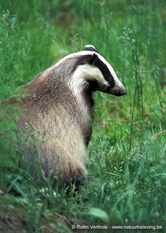

DasMeles meles

- Data
- lengte: 60 - 80 cm
staart: 15 - 25 cm
gewicht: 9- 12 kg
leeftijd: zelden ouder dan 15 jaar - Biotoop
- Dassen houden van een gevarieerd landschap. Ze vertoeven meestal langs bosranden, in kleine bosjes of in houtwallen in gebieden met een niet te intensieve landbouw en met behoorlijke stukken weiland, akkers, boomgaarden en heggen. De das heeft een voorkeur voor gebieden met hellingen. Dassen worden soms ook in steenachtige gebieden met kliffen of in steengroeven gevonden. Ze bewonen uitgestrekte burchten, die ze met hun brede, krachtige voorpoten zelf graven. Bij de burcht groeien door de rijkbemeste grond dikwijls brandnetels en vlier. De dassen zaaien laatstgenoemde zelf uit door het eten van bessen. Bij de ingang ligt een hoop uitgegraven en in de loop van de jaren vast aangestampte grond. Ook ligt er oud nestmateriaal.
- Voedsel
- De das is een echte alleseter die leeft van zeer gevarieerd,
voornamelijk zacht en klein voedsel. Regenwormen vormen een belangrijk deel
van het voedsel, maar verder eet hij veel andere soorten wormen, insecten
(kevers en hun larven), slakken, amfibiëen (kikkers) en kleine zoogdieren
(jonge konijnen, muizen, mollen) en zelfs egels en wespen. De das eet ook
veel plantaardig voedsel, met name (afgevallen) appels, knollen, eikels,
bessen, gras, paddestoelen maïs en haver.
In sommige landen, zoals Engeland, zijn dassen soms zo tam dat ze hun kost wel eens bij de vuilnisbak durven opscharrelen. - Territorium
- Een dassengemeenschap telt gewoonlijk een aantal volwassen rekels en moertjes, en één of twee worpen - in totaal maximaal 15 dieren. Ze bewonen een 'burcht' of 'bouw', die zich bij voorkeur in een helling of onder overstekende rotsen in een bos bevindt. Een grote burcht kan meer dan 40 ingangen hebben en al tientallen jaren door opeenvolgende generaties worden gebruikt. Het complex bestaat uit een netwerk van pijpen en kamers, die in etages boven elkaar liggen. Zo bestaan er vluchtpijpen, luchtverversingspijpen en toegangspijpen (doorsnede van circa 30 cm). De eigenlijke woning of 'ketel' is gevoerd met stro, dorre bladeren, varens en ander plantenmateriaal. De das klemt dit materiaal tussen zijn voorpoten en kin, en schuifelt het achterwaarts naar de ingang van de burcht. Het door de das aangevoerde bekledingsmateriaal wordt geregeld buiten de burcht gelucht en eventueel vervangen. In de buurt van de burcht bevindt zich gewoonlijk minstens één latrine - een door de dassen kaal gekrabd gebied van enkele vierkante meters, met ondiepe putjes waarin de mest wordt gedeponeerd. De burcht, voedselgronden en latrines zijn door herkenbare, vaste wissels met elkaar verbonden. Stevige, zwart-met-witte haren aan prikkeldraad duiden bijvoorbeeld op de ligging van een dassenwissel. De groep verzamelt zijn voedsel binnen het gevestigde territorium, dat tegen buitenstaanders wordt verdedigd. Dit gebied kan 40 ha groot zijn. Dassen die dezelfde burcht bewonen 'stempelen' elkaar door geurstoffen uit klieren aan het achterlijf aan elkaars vacht te smeren.
- Voortplanting
- De paar- of ranstijd valt in de zomer. De draagtijd bedraagt een maand of zeven, maar de bevruchte eicel nestelt zich pas in december in de baarmoeder. Circa acht weken later, in februari-maart, worden de jongen geboren. De jongen komen in een gevoerde kraamkamer ter wereld. Een worp bestaat uit twee tot vier, maar meestal uit drie, jongen. Ze zijn in het begin met zachte, grijswitte haren bedekt. De ogen openen zich na ongeveer vijf weken en na twaalf weken worden de jongen gespeend. In de eerste 6-8 weken van hun leven blijven de jongen ondergronds; daarna gaan ze voorzichtig de wereld boven verkennen. Als ze de burcht uitgaan komt de moeder eerst de omgeving met gesnuffel inspecteren. Dan gaat ze terug om haar jongen op te halen. In het begin blijven ze maar kort buiten en schieten ze bij het minste teken van onraad terug in de veilige burcht. Na een week worden ze wat moediger en beginnen hun omgeving te onderzoeken en ruwe en woeste spelletjes met elkaar te spelen. Later worden ze door de moeder mee genomen en leren zelf hun eten te zoeken. Sommige jonge dieren blijven in de familiegroep, maar andere maken vaak lange trektochten op zoek naar een nieuw territorium.
- Gedrag
- Hoewel er in onze streken nog dassen voorkomen, worden ze zelden door mensen gezien. Het zijn echte nachtdieren, die bovendien bijzonder schuw en voorzichtig zijn. Dassen komen gewoonlijk een uur na zonsondergang uit hun burcht in de herfst en de winter. In de zomer komen ze wel vóór zonsondergang naar buiten, omdat de nachten dan korter zijn. Als er echter onraad is of er verdachte geluiden of geuren zijn, blijft de das de gehele nacht in zijn burcht en ook bij heldere maan komt hij vaak niet naar buiten. Als de das de burcht verlaat snuift hij voortdurend de lucht op om te ruiken of er onraad is. Dassen gebruiken bij de burcht staande bomen met een ruwe schors voor het scherpen van hun nagels en het verwijderen van modder van hun poten. In de herfst leggen dassen een grote vetvoorraad onder de huid en rond de ingewanden aan, waardoor hun gewicht soms wel met 3 à 5 kg toeneemt. Ze houden geen echte winterslaap, maar hartje winter nemen hun activiteiten sterk af.
- Kenmerken
- De das lijkt nogal op een kleine beer, met zijn gedrongen 90 cm lange lichaam, zijn korte staart en zijn korte sterke poten met indrukwekkende klauwen. Op afstand lijkt de vacht van de das grijs, maar elke afzonderlijke haar is zwart en wit gekleurd. Bij het lijf wit, dan een zwart stuk terwijl de punt weer wit is. Het haar van de das was vroeger heel gewild om penselen en scheerkwasten van te maken. In tegenstelling tot de meeste dieren is de das zwart op de buik en poten. Het opvallendste aan het dier is echter zijn kop: wit met twee brede zwarte strepen, die van achter de oren bijna tot op het topje van zijn snuit lopen. Hun kleine oogjes staan in het zwarte gedeelte en vallen dus nauwelijks op. Er zijn allerlei kleurvarianten waarbij de lichte delen van zuiver wit tot zandkleurig variëren, terwijl de donkere delen van zwart tot roodachtig kunnen zijn. Oude dieren worden vaak heel licht van kleur.
- Aantallen
- Er is in Europa één enkele dassensoort, die in bijna alle Europese en Aziatische landen, van de poolcirkel tot de Middellandse Zee en de Himalaya voorkomt. Je vindt dassen overal in dit gebied behalve in N-Scandinavië, IJsland, Corsica en Sardinië, Sicilië en Cyprus. In Nederland, België en grote delen van Duitsland en Frankrijk is de das thans (vrij) zeldzaam; in veel andere landen komt hij nog tamelijk algemeen voor. Ondanks het feit dat de das tot de beschermde diersoorten behoort, wordt hij nog geregeld clandestien gevangen en gedood.